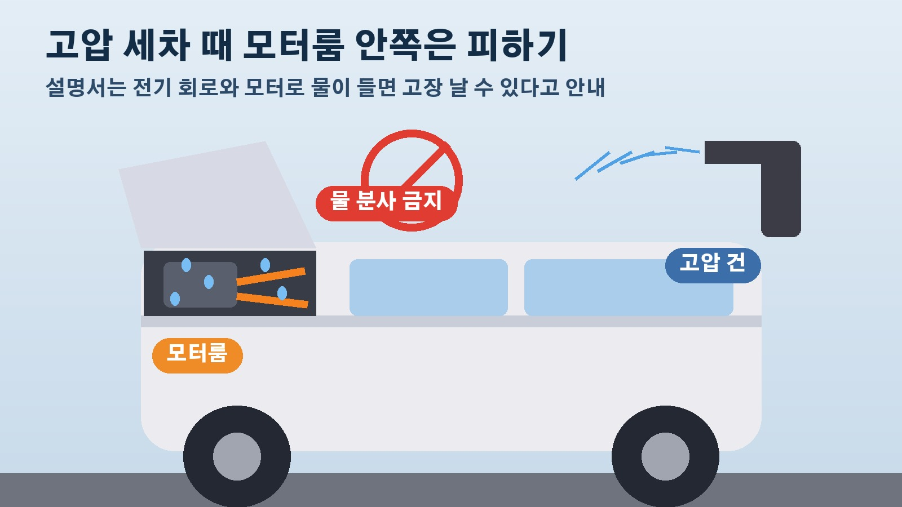

스타리아 EV 모터룸에 빗물 줄줄, 설명서는 고압 세차 때 모터룸에 물 뿌리지 말라는데 현대차 답변은 방수 처리돼 괜찮다
전기차를 세차할 때 보닛 안쪽까지 물을 뿌려도 되는지 한 번쯤 고민해 보셨을 거예요. 엔진이 없으니 괜찮겠지 싶다가도 그 안에 고전압 배선이 지나간다는 생각을 하면 손이 멈추게 되죠. 그런데 10월 16일 뉴스필드 단독 보도에 따르면 올해 나온 현대차 스타리아 일렉트릭 차주가 비 오는 날 잠깐 달렸을 뿐인데 모터룸 안으로 빗물이 많이 들어왔다고 문제를 제기했습니다. 차주는 세차를 하면 물이 더 많이 들어간다고도 말했는데요. 기사에 나온 내용만 추려서 세차하시는 분들이 알아 두면 좋을 부분을 정리해 봤습니다.
비 오는 날 40분 달렸는데 모터룸에 물이 고였다
제보자는 올해 출시된 스타리아 일렉트릭을 타고 여행을 가던 비 오는 날 보닛을 열어 봤다가 깜짝 놀랐다고 합니다. 모터룸 안 고전압 배선 주변과 충전구 쪽으로 빗물이 많이 흘러들고 있었기 때문이에요. 기사에 실린 사진은 비가 많이 오지 않는 상태에서 약 40분 운행한 뒤의 모습으로, 주황색 고전압 케이블이 연결된 부품 덮개 위로 물방울이 맺혀 흘러내리고 있었습니다. 차주는 세차를 하면 물이 더 많이 들어간다며 전기차의 심장과 다름없는 곳에 이렇게 많은 물이 들어오는 것이 정상인지 의문을 나타냈습니다.
현대차 설명서의 고압 세차 주의 사항
이 부분이 세차와 바로 이어지는 대목입니다. 현대차 공식 온라인 취급설명서 가운데 스타리아 일렉트릭 2027년형 한국어 설명서에는 고압 세차 시 주의 사항이라는 항목이 있는데요. 여기에는 모터룸 내부에 물을 분사하지 말라고 적혀 있고, 전기 회로와 전기 장치, 모터, 에어덕트 등으로 물이 들어가면 차량에 고장이 날 수 있다고 설명합니다. 그러니까 제조사 스스로 세차할 때 모터룸 안쪽에 물을 쏘지 말라고 안내하고 있는 셈입니다. 셀프세차장에서 고압 건을 쓰실 때 보닛 틈이나 앞쪽 그릴 안쪽으로 물줄기를 깊게 들이밀지 않는 편이 설명서 취지에 맞습니다.
현대차 상담 답변은 방수 처리가 돼 있으니 걱정 말라
차주가 현대차 고객센터와 창원 하이테크센터에 문의했을 때 들은 답은 조금 달랐다고 합니다. 차주 말에 따르면 현대차 측은 약 5년 전 아이오닉5와 아이오닉6, 포터도 물이 들어와 시끄러웠지만 지금까지 문제가 없었고 방수 처리가 돼 있으니 걱정하지 말라고 했습니다. 시간이 지나 고전압 배선 연결부의 방수 처리가 낡으면 어떻게 되느냐는 질문에는 나중에 문제가 생기면 조치하겠지만 지금은 문제가 없어 조치할 것이 없다는 답이 돌아왔다고 해요. 차주가 같은 문제를 지목한 차종은 스타리아 EV와 아이오닉5, 아이오닉6, 포터 EV입니다.

쟁점은 들어오는 물의 양과 오래 쓴 뒤의 방수 성능
기사가 짚은 쟁점은 두 가지입니다. 평소 비를 맞거나 세차할 때 모터룸으로 들어가는 물의 양이 제조사가 허용한 설계 범위 안에 있는지, 그리고 고전압 배선 연결부의 방수 성능이 차가 오래된 뒤에도 유지되는지입니다. 설명서는 물이 들어가면 고장 날 수 있다고 경고하고 상담에서는 방수가 돼 문제없다고 하니 소비자 입장에서는 어느 쪽을 믿어야 할지 헷갈릴 수밖에 없죠. 기사는 현대차가 어떤 기술적 근거로 안전하다고 판단했는지 구체적인 설명과 점검 결과가 필요하다고 지적했습니다. 참고로 2024년 3월과 12월에 있었던 통합충전제어장치 리콜은 저전압 배터리 충전 불량 문제로, 이번 물 유입 문제와는 직접적인 관련이 없다고 기사는 덧붙였습니다.
전기차 세차할 때 기억해 둘 것
결국 지금 확실하게 말할 수 있는 것은 제조사 설명서의 안내입니다. 고압 세차를 할 때는 모터룸 내부에 물을 분사하지 않는 것, 이것 하나만큼은 차주가 직접 지킬 수 있는 부분이에요. 아이오닉5나 아이오닉6, 포터 EV처럼 기사에 이름이 오른 차를 타신다면 내 차 설명서의 고압 세차 주의 사항 항목을 한 번 찾아 읽어 두시길 권합니다. 비 오는 날 보닛 안에 물이 고인 것이 걱정된다면 차주처럼 사진을 남겨 두고 서비스센터에 문의한 기록을 챙겨 두는 것도 나중을 위해 도움이 됩니다.
참고한 기사: 뉴스필드 단독 현대차 스타리아 EV 모터룸 빗물 유입에 분통, 우천 주행을 피하란 말인가 2026년 10월 16일
태그
스타리아EV 전기차세차 모터룸 고압세차 셀프세차 현대차 아이오닉5 아이오닉6 포터EV 차량관리